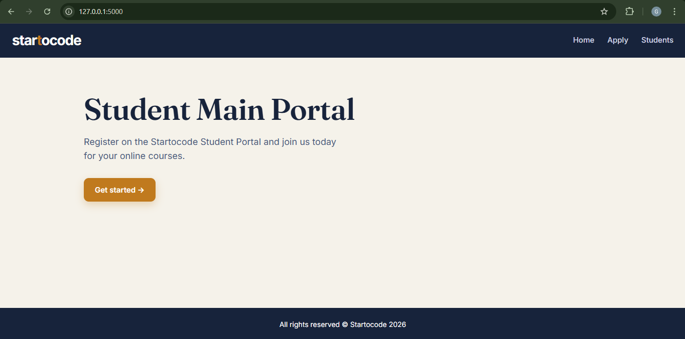
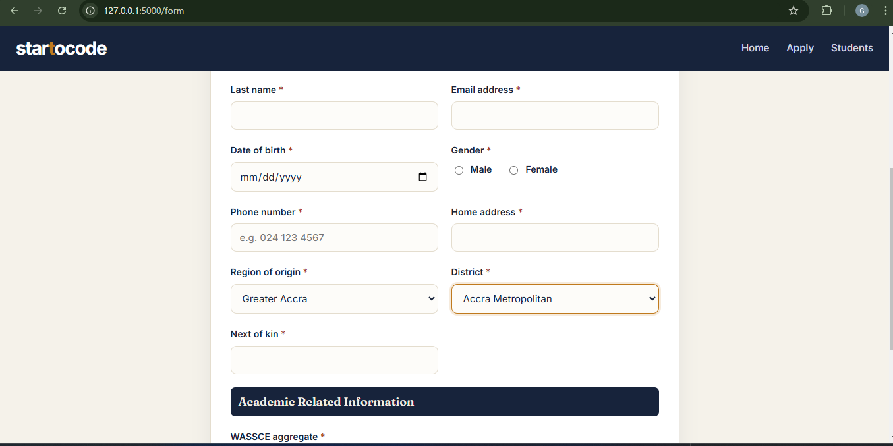

Student Registration
Collects student information through a structured web form.
SOFTWARE DEVELOPMENT
A web-based student information system developed with Python, Flask, SQLite, HTML, CSS and JavaScript.
Explore the Source Code on GitHubPROJECT OVERVIEW
I developed a Flask and SQLite student information portal adapted to Ghana's 16 regions and 261 districts. The system supports student registration, dependent region and district selections, file validation, searchable records, detailed student views and asynchronous admission-status updates.
The project demonstrates the integration of frontend interfaces, backend application logic, database storage and interactive functionality.
PROJECT PROBLEM
Managing student registration information requires a clear and organized way to capture records, retrieve information and update application statuses.
This project explores how a web-based system can simplify these tasks while incorporating Ghana-specific geographic information.
To develop an interactive student registration and management application that supports structured data entry, record searching and admission-status updates.
MY CONTRIBUTION
I developed the application structure, implemented the student registration workflow, connected the interface to a SQLite database and added interactive functionality using JavaScript.
I also implemented the region and district selection workflow, student record views and admission-status management features.
APPLICATION FEATURES
Collects student information through a structured web form.
Provides dependent dropdown selections using Ghana-specific geographic data.
Displays registered students and supports searching and detailed views.
Supports interactive updates to students' admission statuses.
TECHNOLOGIES
DEVELOPMENT PROCESS
PROJECT OUTCOME
The application provides a working local demonstration of student registration, searchable records and admission-status management.
Testing with fictional student records demonstrated the registration workflow, geographic selections and record updates.
The public demonstration uses fictional records. No real student information or uploaded identity documents are included.
APPLICATION SCREENSHOTS
Screenshots of the application landing page and student registration workflow.


LIMITATIONS AND LESSONS
This project strengthened my understanding of backend and frontend integration, database-driven applications, form validation and interactive user interfaces.
The application is a development demonstration rather than a production student records system. A real deployment would require additional security, authentication, privacy protections and operational testing.
SOURCE CODE
The source code and project documentation are available in the public GitHub repository.